Hedehusene
Grobkörniger, blaugrauer Granit
Höhe ü. d. Erde: 163 cm
Größte Breite: 85 cm
Dicke ca.: 70 cm
Runenhöhe: 17,5 - 21,5 cm
Runeninschrift :
Der Stein Hornbornes, Svides Nachkomme.

Hedehusene
Listennummer : DR 250 / DK Sj 17
Navidaten: 55.65014 12.20794 oder: Hovedgaden 369, 2640 Hedehusene, Dänemark
Der Stein, der auch als Høje Tåstrup Stein bezeichnet wird, wurde im Jahre 1827 auf einem Feld bei Kallerup, nicht weit vom Landweg zwischen Kopenhagen und Roskilde, von einem Steinhauer gefunden. Auf der einen Seite, die zur Erde gewandt war, hatte er einige Schriftzeichen feststellen können.
Der Stein geriet aber wieder in Vergessenheit und erst 1850 fand er sich, beinahe vollständig von Erde bedeckt, wieder und wurde ein Jahr später am Landweg Kopenhagen - Roskilde auf Geheiß von J.J.A. Worsaae aufgestellt. Worsaae (*14.03.1821 in Vejle - 15.08.1885 in Kopenhagen) zählt zu den Wegbereitern der prähistorischen Archäologie. 1854 zum Professor ernannt prägte er den Begriff der "Wikingerzeit".
Im Jahr 1924 wurde er dann bei der neuen (Ansgar)Kirche in Hedehusene aufgestellt, wo er heute noch steht.
Aufgrund der Inschriftenformel und einigen Runenformen gehört dieser Stein zu den ältesten, rein heidnischen Runensteinen Dänemarks.
Am 30.08.2016 habe ich es mal wieder geschafft hier vorbeizuschauen und dabei diese Fotos gemacht:
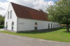 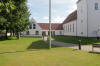 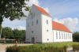 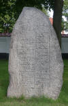 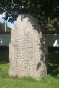 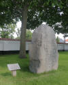 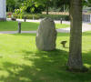


Im Vorfeld zu dem 2016 erschienenen Buch von Lisbeth M. Imer "Danmarks Runesten - en fortælling" reiste die Runologin des Nationalmuseums Kopenhagen mit dem Fotografen Roberto Fortuna zur Bestandsaufnahme durch die Lande. Dieser hat die Runensteine abends bei Dunkelheit mit Schräglicht aufgenommen und darüber wirklich herausragende Fotos erzielt. Diese Foto stammt von 2012.
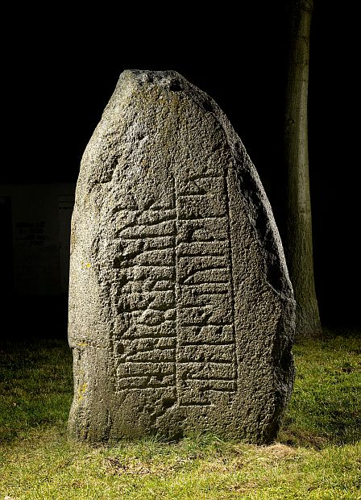
Lizenz: CC-BY-SA - Der digitalen Datenbank des Nationalmuseums Kopenhagen entnommen.
Dort findet sich aus dieses sw-Foto von Erik Moltke aus den 1930er Jahren, auf dem die Runeninschrift sehr gut zu erkennen ist.
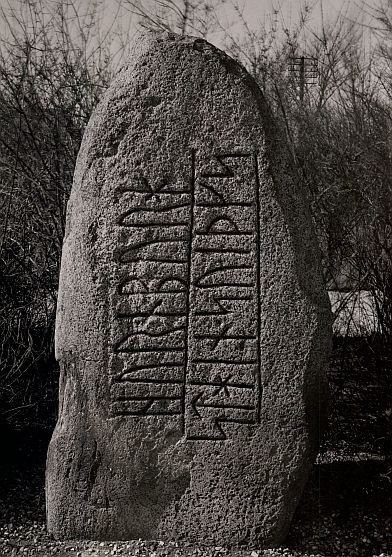
Lizenz: CC-BY-SA - Der digitalen Datenbank des Nationalmuseums Kopenhagen entnommen.
Hier noch ein Foto der dänischen Runologin Marie Stoklund 06.05.1984.
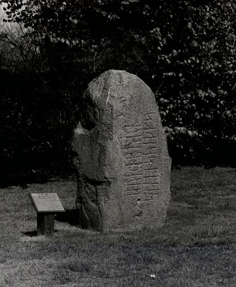
Lizenz: CC-BY-SA - Der digitalen Datenbank des Nationalmuseums Kopenhagen entnommen.
Aus dem Buch "De danske Runemindesmærker" von Ludv. F.A. Wimmer, 2. Band, S. 335, 1899-1901, stammt diese Zeichnung, die von Prof. J. Magnus Petersen ausgeführt wurde (Eigene Fotografie aus dem Buch) .
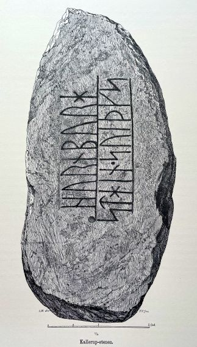
Die Infos zu dem Runenstein aus der dänischen Runendatenbank kann man im Internet hier abrufen.
Über diese Verlinkung findet sich eine schöne Zeichnung des Runensteins von L.A. Ring (1855-1933) "Runesten ved Roskilde Landevej" von 1912.